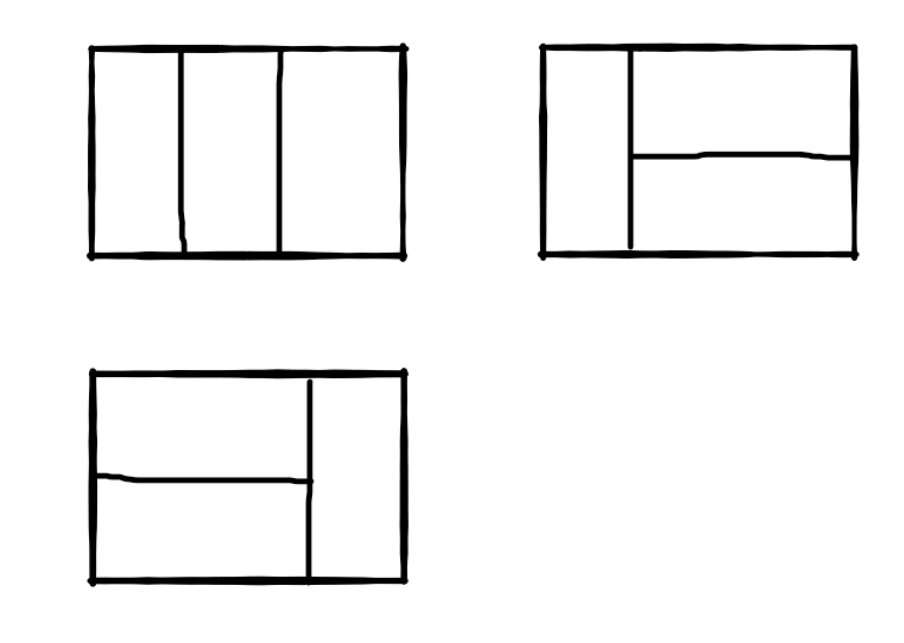
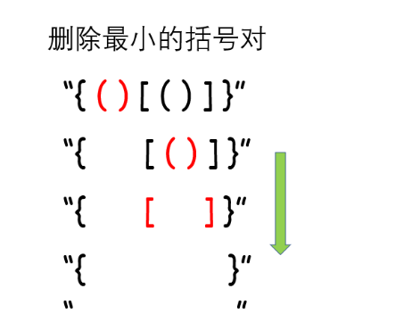
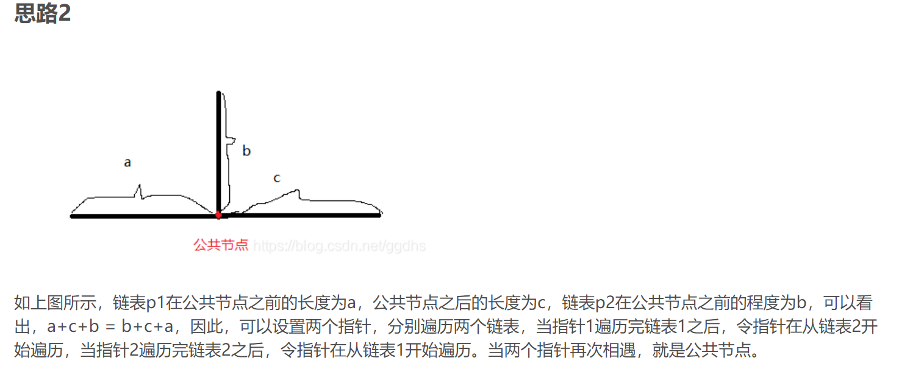
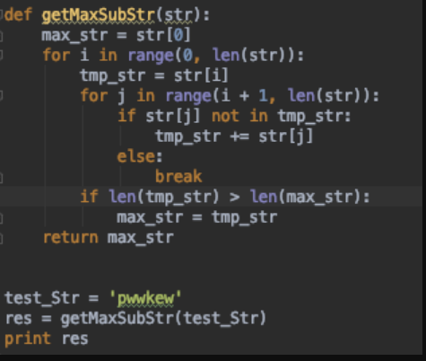

剑指offer
2020-09-02
1 剑指offer题解
安装牛客网的顺序的来的~
1.1 二维数组中的查找
题目描述 在一个二维数组中（每个一维数组的长度相同），每一行都按照从左到右递增的顺序排序，每一列都按照从上到下递增的顺序排序。请完成一个函数，输入这样的一个二维数组和一个整数，判断数组中是否含有该整数。
思路：最先想到的遍历一遍数组，判断target是否在数组中即可
1.2 替换空格
题目描述 请实现一个函数，将一个字符串中的每个空格替换成“%20”。例如，当字符串为We Are Happy.则经过替换之后的字符串为We%20Are%20Happy。
思路:
最先能想到replace，哈哈~直接替换
1.3 从头到尾打印链表
题目描述
输入一个链表，按链表从尾到头的顺序返回一个ArrayList。
从尾到头的顺序，第一个感觉是reverse，但是感觉这么写会被打~
还是一样的问题：有几天
1.4 重建二叉树
题目描述
输入某二叉树的前序遍历和中序遍历的结果，请重建出该二叉树。假设输入的前序遍历和中序遍历的结果中都不含重复的数字。例如输入前序遍历序列{1,2,4,7,3,5,6,8}和中序遍历序列{4,7,2,1,5,3,8,6}，则重建二叉树并返回。
思路:递归加迭代
知识点：
前序遍历列表：第一个元素永远是 【根节点 (root)】 中序遍历列表：根节点 (root)【左边】的所有元素都在根节点的【左分支】，【右边】的所有元素都在根节点的【右分支】
算法思路：
通过【前序遍历列表】确定【根节点 (root)】 将【中序遍历列表】的节点分割成【左分支节点】和【右分支节点】 递归寻找【左分支节点】中的【根节点 (left child)】和 【右分支节点】中的【根节点 (right child)】
就是在考察前序中序后序树的遍历顺序:前序第一个是根节点，找到根节点在中序中的位置，可以划分左右子树，然后递归即可
class Solution:
def buildTree(self, preorder: List[int], inorder: List[int]) -> TreeNode:
if len(inorder) == 0:
return None
# 根节点
root = TreeNode(preorder[0]) #前序遍历找根节点~
# 获取根节点在 inorder 中的索引
idx = inorder.index(preorder[0]) # 找到根节点的索引
# 左子树
root.left = self.buildTree(preorder[1:idx+1], inorder[:idx]) #
# 右子树
root.right = self.buildTree(preorder[idx+1:], inorder[idx+1:])
return root1.5 两个栈实现队列
栈：先进后厨 队列：先进先出
题目描述
用两个栈来实现一个队列，完成队列的Push和Pop操作。 队列中的元素为int类型。
找个主要如果用牛客的话需要自己先定义两个空队列
# -*- coding:utf-8 -*-
class Solution:
def __init__(self):
self.stack1 = []
self.stack2 = []
def push(self, node):
# write code here
self.stack1.append(node)
def pop(self):
# return xx
if len(self.stack2) == 0: # 第二个是空队列哦
while len(self.stack1) !=0:
self.stack2.append(self.stack1[len(self.stack1)-1]) # 先进先出
self.stack1.pop()
pop = self.stack2[len(self.stack1)-1]
self.stack2.pop()
return pop1.6 旋转数组中最小的数
题目描述
把一个数组最开始的若干个元素搬到数组的末尾，我们称之为数组的旋转。 输入一个非递减排序的数组的一个旋转，输出旋转数组的最小元素。 例如数组{3,4,5,1,2}为{1,2,3,4,5}的一个旋转，该数组的最小值为1。 NOTE：给出的所有元素都大于0，若数组大小为0，请返回0。
思路：第一感觉，一个min函数不就完事了，但是这么写没有意义，面试官会说你把min的底层写出来~
呵呵 了
因此肯定考排序这里的，比如二分法查找~
保证rotateArray[left]为全场最小，当rotateArray[left]<rotateArray[right]时，证明进入了有序数组，直接输出
# -*- coding:utf-8 -*-
class Solution:
def minNumberInRotateArray(self, rotateArray,):
# write code here
if len(rotateArray) == 0:
return 0
# 二分法查找,快排
left = 0
right = len(rotateArray)-1
while left<right: #从左向右开始遍历
if rotateArray[left]<rotateArray[right]:
return rotateArray[left]
mid = left + (right -left)//2
# 左边 有序取另一半
if rotateArray[left]<rotateArray[mid]:
left = mid +1
# 右边有序右边取最小
elif rotateArray[mid]<rotateArray[right]:
right = mid
#前面两个相等的时候，left进一继续
else :
left+=1
return rotateArray[left]1.7 斐波那契数列
题目描述 大家都知道斐波那契数列，现在要求输入一个整数n，请你输出斐波那契数列的第n项（从0开始，第0项为0，第1项是1）。 n<=39
直接给出动态规划的解法，省内存
1.8 青蛙跳台阶问题
题目描述 一只青蛙一次可以跳上1级台阶，也可以跳上2级。求该青蛙跳上一个n级的台阶总共有多少种跳法（先后次序不同算不同的结果）。
1.9 变态跳台问题
加强版
题目描述
一只青蛙一次可以跳上1级台阶，也可以跳上2级……它也可以跳上n级。求该青蛙跳上一个n级的台阶总共有多少种跳法。
一般递归能解决大部分的问题
易知 f(n)=f(n-1)+f(n-2)+……f(1) f(n-1)=f(n-2)+……f(1) 两式相减得f(n)=2f(n-1)
1.10 矩形覆盖
题目描述 我们可以用21的小矩形横着或者竖着去覆盖更大的矩形。请问用n个21的小矩形无重叠地覆盖一个2*n的大矩形，总共有多少种方法？

思想：和跳台阶类似，小矩形竖着放相当于跳一级台阶，横着放相当于跳两级台阶，所以可以复用跳台阶的代码（见第八题）。
1.11 二进制中的1的个数
题目描述 输入一个整数，输出该数32位二进制表示中1的个数。其中负数用补码表示。
其实我jio的一行就行了，bin+count,但是牛客不给通过
补充一点基础的语法
0xffffffff是多少？
0xffffffff表示的是一个十六进制数
1.将其转换为十进制数
0xffffffff=16x10^7+16x10^6+...+16x10^0=4294967295
2.将其转换为二进制数
十六进制转换为二进制就是直接把每位转换成二进制就可以了
f(15)变成二进制：1111，则
0xffffffff = 1111 1111 1111 1111 1111 1111 1111 1111 (8个F的二进制形式, 一个F占4个字节 )
即32位数都是1的二进制数
0x代表16进制，后面是数字，十进制是4294967295还是得用正常的方式
class Solution:
def NumberOf1(self, n):
# write code here
count = 0
if n < 0:
n = n & 0xffffffff
while n:
count += 1
n = (n - 1) & n
return count
n & 0xffffffff
解释一下这句话的意思
1.12 数值得整熟次方
题目描述
给定一个double类型的浮点数base和int类型的整数exponent。求base的exponent次方。
保证base和exponent不同时为0
实现底层得pow，限制条件多，但是不难得，京东一面其中一个算法题
# -*- coding:utf-8 -*-
class Solution:
def Power(self, base, exponent):
# write code here
temp = base
# 0的0次方和0的负数次方无意义
if base == 0.0 and exponent <= 0:
return None
#0的次方为0
if base == 0.0 :
return 0
#除0以外的任何数的0次方都为0
if exponent == 0:
return 1
#负数次方时
if exponent < 0:
for i in range(-exponent-1):
base *= temp
return 1.0 / base
else:
#正数次方时
for i in range(exponent-1):
base *= temp
return base今天贝壳找房得笔试挂了，因此多来三个题平复下心情~
算法虐我千百遍我待算法如初恋~
1.13 调整数组顺序使其位于整熟前面
题目描述
输入一个整数数组，实现一个函数来调整该数组中数字的顺序，使得所有的奇数位于数组的前半部分，所有的偶数位于数组的后半部分，并保证奇数和奇数，偶数和偶数之间的相对位置不变。
给一个常规得解法
1.14 链表的倒数第k个节点
题目描述 输入一个链表，输出该链表中倒数第k个结点。
用一个最直观的方法，时间复杂度为o（k)
1.15 反转链表
题目描述 输入一个链表，反转链表后，输出新链表的表头。
自己画个图就非常的明白了
class Solution:
# 返回ListNode
def ReverseList(self, pHead):
# write code here
p = None
while pHead:
curr=pHead
pHead=pHead.next
curr.next=p
p=curr
return p突然发现，今天笔试题不会的原因是因为，比较重要的5个排序没有学透！！
1.16 合并两个有序链表
题目描述 输入两个单调递增的链表，输出两个链表合成后的链表，当然我们需要合成后的链表满足单调不减规则。
1.17 树的子结构
题目描述
输入两棵二叉树A，B，判断B是不是A的子结构。（ps：我们约定空树不是任意一个树的子结构）
把树看作一个链表的问题呗
1.18 二叉树的镜像
题目描述
操作给定的二叉树，将其变换为源二叉树的镜像。
输入描述:
二叉树的镜像定义：源二叉树
8
/
6 10
/ /
5 7 9 11
镜像二叉树
8
/
10 6
/ /
11 9 7 5
思路：观察镜像的特点即可
# -*- coding:utf-8 -*-
class TreeNode:
def __init__(self, x):
self.val = x
self.left = None
self.right = None
class Solution:
# 返回镜像树的根节点
def Mirror(self, root):
# write code here
if not root:
return
root.left,root.right =root.right,root.left
self.Mirror(root.left)
self.Mirror(root.right)
return root1.19 顺时针打印矩阵
题目描述 输入一个矩阵，按照从外向里以顺时针的顺序依次打印出每一个数字，例如，如果输入如下4 X 4矩阵： 1 2 3 4 5 6 7 8 9 10 11 12 13 14 15 16 则依次打印出数字1,2,3,4,8,12,16,15,14,13,9,5,6,7,11,10.
可以考虑画个图，完事就会想到：每次只取第一行数据，然后再把矩阵逆时针旋转90度
1.20 包含min函数的栈
题目描述
定义栈的数据结构，请在该类型中实现一个能够得到栈中所含最小元素的min函数（时间复杂度应为O(1)。
1.21 栈的压入和弹出顺序
题目描述
输入两个整数序列，第一个序列表示栈的压入顺序，请判断第二个序列是否可能为该栈的弹出顺序。假设压入栈的所有数字均不相等。例如序列1,2,3,4,5是某栈的压入顺序，序列4,5,3,2,1是该压栈序列对应的一个弹出序列，但4,3,5,1,2就不可能是该压栈序列的弹出序列。（注意：这两个序列的长度是相等的）
思路：题没读明白，直接看的解析
’’’ 首先找到这个规律，判断顺序是否正确，必须先将压入序列全部遍历后，才能进行判断， 即判断的永远是出栈序列的最后两个。 然后就有方法，先将push序列依次压入栈，并判断栈顶元素是否和弹出序列pop的首位相同， 如果相同，则弹出该元素，并且pop首位加一，作为下一个判断位置。如果不相同，则push继续压入。 如果push全部压入，表明这时的弹出顺序已经确定。这时候判断弹出序列pop的首位和栈顶元素是否相同， 不相同，则表明该序列为假。如果全部判断都相同，就为真。
’’’
- 感觉例子看的有点晕糊，栈的存储原则是后进先出
1.22 最小的K个数
题目描述 输入n个整数，找出其中最小的K个数。例如输入4,5,1,6,2,7,3,8这8个数字，则最小的4个数字是1,2,3,4。
1.23 最大子序和
题目描述 HZ偶尔会拿些专业问题来忽悠那些非计算机专业的同学。今天测试组开完会后,他又发话了:在古老的一维模式识别中,常常需要计算连续子向量的最大和,当向量全为正数的时候,问题很好解决。但是,如果向量中包含负数,是否应该包含某个负数,并期望旁边的正数会弥补它呢？例如:{6,-3,-2,7,-15,1,2,2},连续子向量的最大和为8(从第0个开始,到第3个为止)。给一个数组，返回它的最大连续子序列的和，你会不会被他忽悠住？(子向量的长度至少是1)
典型的动态规划
1.24 数组中出现次数超过一半的数字
题目描述 数组中有一个数字出现的次数超过数组长度的一半，请找出这个数字。例如输入一个长度为9的数组{1,2,3,2,2,2,5,4,2}。由于数字2在数组中出现了5次，超过数组长度的一半，因此输出2。如果不存在则输出0。
给出两种解法
1.25 字符串的排序
这个题是腾讯今年的笔试题之一
题目描述 输入一个字符串,按字典序打印出该字符串中字符的所有排列。例如输入字符串abc,则按字典序打印出由字符a,b,c所能排列出来的所有字符串abc,acb,bac,bca,cab和cba。 输入描述: 输入一个字符串,长度不超过9(可能有字符重复),字符只包括大小写字母。
先给一个能调包做的
itertools.permutations 通俗地讲，就是返回可迭代对象的所有数学全排列方式。
#Python中的itertools.permutations,返回可迭代对象的所有数学全排列方式。
#join()方法用于将序列中的元素以指定的字符连接生成一个新的字符串。
#set()函数创建一个无序不重复元素集，可进行关系测试，删除重复数据，还可以计算交集、差集、并集等。
#sort()函数用于对原列表进行排序，如果指定参数，则使用比较函数指定的比较函数
#list()方法用于将元组转换为列表。# -*- coding:utf-8 -*-
import itertools
class Solution:
def Permutation(self, ss):
# write code here
if not ss:
return ss
result=[]
k=itertools.permutations(ss)
for i in k:
result.append(''.join(i))
result=list(set(result))
result.sort()
return result
方法二
# -*- coding:utf-8 -*-
class Solution:
def Permutation(self, ss):
if len(ss) == 0:
return []
res = [ss[0]]
for i in range(1, len(ss)):
tmp_list = res
res = []
for item in tmp_list:
for j in range(len(item)+1):
new_item = item[:j] + ss[i] + item[j:]
res.append(new_item)
result = list(set(res))
result.sort()
return resultb站笔试题
1.26 有效的括号
题目描述：
给定一个只包括 ‘(’，‘)’，‘{’，‘}’，‘[’，’]’ 的字符串，判断字符串是否有效。
有效字符串需满足：
左括号必须用相同类型的右括号闭合。 左括号必须以正确的顺序闭合。 注意空字符串可被认为是有效字符串。
示例 1:
输入: “()” 输出: true 示例 2:
输入: “()” 输出: true 示例 3:
输入: “(]” 输出: false 示例 4:
输入: “([)]” 输出: false 示例 5:
输入: “{[]}” 输出: true
知识点：栈
解题思路 当开始接触题目时，我们会不禁想到如果计算出左括号的数量，和右括号的数量，如果每种括号左右数量相同, 会不会就是有效的括号了呢? 事实上不是的，假如输入是 [ (] ) ，每种括号的左右数量分别相等, 但不是有效的括号。这是因为结果还与括号 的位置有关。 仔细分析我们发现，对于有效的括号, 它的部分子表达式仍然是有效的括号, 比如 \(\quad\{()[()]\}\) 是一个有效的括 号, \(\quad()[\{\}]\) 是有效的括号, \(\quad[()]\) 也是有效的括号。并且当我们每次删除一个最小的括号对时，我们会逐渐将 括号删除完。比如下面的例子。

这个思考的过程其实就是栈的实现过程。因此我们考虑使用栈，当遇到匹配的最小括号对时，我们将这对括号从栈中删除（即出栈），如果最后栈为空，那么它是有效的括号，反之不是。
代码中我们使用了哈希表来判断是否能够形成括号，从而决定进行入栈操作还是出栈操作。leetcode
- 使用栈，是左括号代表入栈，是右括号代表出栈
- 如果要出栈，出栈的元素要与当前元素匹配
- 最终栈要为空
class Solution:
def isValid(self, s: str) -> bool:
stack=[] #设置一个列表，把该列表当做栈来使用即可。
dic={')':'(','}':'{',']':'['} #使用字典存储括号,并且右括号为key,左括号为value
for char in s:
if char in dic.values(): #左括号就入栈
stack.append(char)
elif char in dic.keys(): #有右括号的话就进行比较，
if stack==[] or dic[char] != stack.pop():
return False
else:
return False #不再字典中的输入直接输出错误
return stack==[]一个比较骚的题解
1.27 找零
链接：https://www.nowcoder.com/questionTerminal/944e5ca0ea88471fbfa73061ebe95728 来源：牛客网
Z国的货币系统包含面值1元、4元、16元、64元共计4种硬币，以及面值1024元的纸币。现在小Y使用1024元的纸币购买了一件价值为N (0 < N 1024)N(0<N≤1024)的商品，请问最少他会收到多少硬币？
也就是买柠檬水找钱的问题
1.28 24点游戏
你有 4 张写有 1 到 9 数字的牌。你需要判断是否能通过 *，/，+，-，(，) 的运算得到 24。
示例 1:
输入: [4, 1, 8, 7] 输出: True 解释: (8-4) * (7-1) = 24 示例 2:
输入: [1, 2, 1, 2] 输出: False
注意:
除法运算符 / 表示实数除法，而不是整数除法。例如 4 / (1 - 2/3) = 12 。 每个运算符对两个数进行运算。特别是我们不能用 - 作为一元运算符。例如，[1, 1, 1, 1] 作为输入时，表达式 -1 - 1 - 1 - 1 是不允许的。 你不能将数字连接在一起。例如，输入为 [1, 2, 1, 2] 时，不能写成 12 + 12 。
四个数取出两个数之后,做加减乘除处理之后加入到原数组中会剩下三个数,递归交给下一层去处理akari-5
class Solution:
def judgePoint24(self, nums: List[int]) -> bool:
if not nums: return False
def helper(nums):
if len(nums) == 1: return abs(nums[0]-24) < 1e-6
for i in range(len(nums)):
for j in range(len(nums)):
if i != j:
newnums = [nums[k] for k in range(len(nums)) if i != k != j]
if helper(newnums + [nums[i]+nums[j]]): return True
if helper(newnums + [nums[i]-nums[j]]): return True
if helper(newnums + [nums[i]*nums[j]]): return True
if nums[j] != 0 and helper(newnums + [nums[i]/nums[j]]): return True
return False
return helper(nums)1.29 从上到下打印二叉树
题目描述 从上往下打印出二叉树的每个节点，同层节点从左至右打印。
思路：二叉树的层次遍历,一层一层遍历完继续下一层
# -*- coding:utf-8 -*-
# class TreeNode:
def __init__(self, x):
self.val = x
self.left = None
self.right = None
class Solution:
# 返回从上到下每个节点值列表，例：[1,2,3]
def PrintFromTopToBottom(self, root):
# write code here
#
if not root:
return ''
que=[root] #根节点保存在队列中
res=[] #用一个list保存输出值
while que:
if que[0].left:
que.append(que[0].left)
if que[0].right:
que.append(que[0].right)
res.append(que[0].val)
que.pop(0) #遍历完一个根和左右就删掉
return res
1.30 二叉树的后续遍历
题目描述 输入一个整数数组，判断该数组是不是某二叉搜索树的后序遍历的结果。如果是则返回true,否则返回false。假设输入的数组的任意两个数字都互不相同。
- 后序遍历的序列中，最后一个数字是树的根节点 ，
- 数组中前面的数字可以分为两部分：第一部分是左子树节点的值，都比根节点的值小；
- 第二部分 是右子树节点的值，都比根节点的值大，
- 后面用递归分别判断前后两部分 是否符合以上原则。
# -*- coding:utf-8 -*-
class Solution:
def VerifySquenceOfBST(self, sequence):
# write code here
if sequence==None or len(sequence)==0:
return False
length=len(sequence)
root=sequence[length-1]
# 在二叉搜索树中 左子树节点小于根节点
for i in range(length):
if sequence[i]>root:
break
# 二叉搜索树中右子树的节点都大于根节点
for j in range(i,length):
if sequence[j]<root:
return False
# 判断左子树是否为二叉树
left=True
if i>0:
left=self.VerifySquenceOfBST(sequence[0:i])
# 判断 右子树是否为二叉树
right=True
if i<length-1:
right=self.VerifySquenceOfBST(sequence[i:-1])
return left and right1.31 二叉树中和为某一路径值
题目描述
输入一颗二叉树的根节点和一个整数，按字典序打印出二叉树中结点值的和为输入整数的所有路径。路径定义为从树的根结点开始往下一直到叶结点所经过的结点形成一条路径。
思路是递归：递归方法是返回当前路径下匹配目标值的路径。
目标值 = 目标值 - 当前节点值
共有几种情况：
0，当节点为空，return
1，当目标值小于0，return
2，当目标值为0 并且 节点下无其他节点
节点下无其他节点说明是叶子节点，并且路径值的和满足了目标值，添加到结果中 并且return
3，当目标值大于0，继续递归class Solution:
# 返回二维列表，内部每个列表表示找到的路径
def FindPath(self, root, expectNumber):
# write code here
path = []
res = []
def dfs(root, sum):
if not root:
return
path.append(root.val)
sum -= root.val
if sum == 0 and not root.left and not root.right:
res.append(path[:])
dfs(root.left, sum)
dfs(root.right, sum)
path.pop()
dfs(root, expectNumber)
return res仔细去想上面三个题的思路
1.32 复杂链表的复制
题目描述 输入一个复杂链表（每个节点中有节点值，以及两个指针，一个指向下一个节点，另一个特殊指针random指向一个随机节点），请对此链表进行深拷贝，并返回拷贝后的头结点。（注意，输出结果中请不要返回参数中的节点引用，否则判题程序会直接返回空）
思路：
class Solution:
# 返回 RandomListNode
def Clone(self, pHead):
# write code here
if not pHead:
return None
newp = RandomListNode(pHead.label)
newp.random = pHead.random
newp.next = self.Clone(pHead.next)
return newp或者下面这一句也是可以的
1.33 反转单词顺序
题目描述
牛客最近来了一个新员工Fish，每天早晨总是会拿着一本英文杂志，写些句子在本子上。同事Cat对Fish写的内容颇感兴趣，有一天他向Fish借来翻看，但却读不懂它的意思。例如，“student. a am I”。后来才意识到，这家伙原来把句子单词的顺序翻转了，正确的句子应该是“I am a student.”。Cat对一一的翻转这些单词顺序可不在行，你能帮助他么？
能~
字符串的倒序，注意输出的结果表示
1.34 左旋字符串
题目描述 汇编语言中有一种移位指令叫做循环左移（ROL），现在有个简单的任务，就是用字符串模拟这个指令的运算结果。对于一个给定的字符序列S，请你把其循环左移K位后的序列输出。例如，字符序列S=”abcXYZdef”,要求输出循环左移3位后的结果，即“XYZdefabc”。是不是很简单？OK，搞定它！
1.35 把数组排成最小整数
题目描述 输入一个正整数数组，把数组里所有数字拼接起来排成一个数，打印能拼接出的所有数字中最小的一个。例如输入数组{3，32，321}，则打印出这三个数字能排成的最小数字为321323。
把数组变成字符串，完事就是常规的冒泡排序就能解决。。冒泡排序的应用
str和int之间的转换，这个需要知道一下
# -*- coding:utf-8 -*-
class Solution:
def PrintMinNumber(self, numbers):
# write code here
n = len(numbers)
for i in range(n):
for j in range(i+1, n):
if int(str(numbers[i]) + str(numbers[j]) > str(numbers[j]) + str(numbers[i])):
numbers[j], numbers[i] = numbers[i], numbers[j]
return ''.join([str(i) for i in numbers])1.36 丑数
题目描述 把只包含质因子2、3和5的数称作丑数（Ugly Number）。例如6、8都是丑数，但14不是，因为它包含质因子7。 习惯上我们把1当做是第一个丑数。求按从小到大的顺序的第N个丑数。
思路：丑数 = 已有的丑数 * (2,3,5) 得到三个新的丑数，但是新的丑数位置不一定正确，切可能会有重复
所以我们每次只新增一个最小值，然后用三个指针记录当前2，3，5质因子形成的最大丑数位置，这样的话就会形成递增的丑数队列，而且遍历的次数也很容易就知道，即n-1,因为1是第一个丑数，n-1次遍历后，我们就可以得到一个含有n个丑数的有序数组，返回最后一个即可。
# -*- coding:utf-8 -*-
class Solution:
def GetUglyNumber_Solution(self, index):
# write code here
if index <= 0:
return 0
uglyList = [1]
p2 = 0 # p2指向小于newUgly且最大的乘以2后可能成为下一个丑数的丑数
p3 = 0 # p3指向小于newUgly且最大的乘以3后可能成为下一个丑数的丑数
p5 = 0 # p5指向小于newUgly且最大的乘以5后可能成为下一个丑数的丑数
for i in range(index-1):
newUgly = min(uglyList[p2]*2, uglyList[p3]*3, uglyList[p5]*5)
uglyList.append(newUgly)
if (newUgly % 2 == 0):
p2 += 1
if (newUgly % 3 == 0):
p3 += 1
if (newUgly % 5 == 0):
p5 += 1
return uglyList[-1]1.37 第一个只出现一次的字符串
题目描述 在一个字符串(0<=字符串长度<=10000，全部由字母组成)中找到第一个只出现一次的字符,并返回它的位置, 如果没有则返回 -1（需要区分大小写）.（从0开始计数）
简单解法，count计数法
# -*- coding:utf-8 -*-
class Solution:
def FirstNotRepeatingChar(self, s):
# write code here
if not s:
return -1
for i in range(len(s)):
if s.count(s[i]) == 1:
return i
return -1或者直接字典
1.38 数组中的逆序对
题目描述
在数组中的两个数字，如果前面一个数字大于后面的数字，则这两个数字组成一个逆序对。输入一个数组,求出这个数组中的逆序对的总数P。并将P对1000000007取模的结果输出。 即输出P%1000000007
输入描述: 题目保证输入的数组中没有的相同的数字
数据范围：
对于%50的数据,size<=10^4
对于%75的数据,size<=10^5
对于%100的数据,size<=2*10^5
示例1 输入1,2,3,4,5,6,7,0
输出7
思路1：先将原序列排序，然后从排完序的数组中取出最小的，它在原数组中的位置表示有多少比它大的数在它前面，每取出一个在原数组中删除该元素，保证后面取出的元素在原数组中是最小的，这样其位置才能表示有多少比它大的数在它前面，即逆序对数。
# -*- coding:utf-8 -*-
class Solution:
def InversePairs(self, data):
# write code here
cnt = 0
copy = data[:]
copy.sort()
for i in copy:
cnt += data.index(i)
data.remove(i)
return cnt%1000000007思路2：归并排序 冒泡排序太暴力了
待我默写出来
1.39 两个链表的第一个公共节点
题目描述
输入两个链表，找出它们的第一个公共结点。（注意因为传入数据是链表，所以错误测试数据的提示是用其他方式显示的，保证传入数据是正确的）
思路1 如果能从后面遍历两个链表，找到最后一个相同的节点，输出即可。可以利用两个栈来实现。
# self.next = None
class Solution:
def FindFirstCommonNode(self, pHead1, pHead2):
# write code here
if pHead1== None or pHead2 == None:
return None
stack1 = []
stack2 = []
p1 = pHead1
while p1 is not None: # 依次将两个链表的所有节点分别压入两个栈中
stack1.append(p1)
p1 = p1.next
p2 = pHead2
while p2 is not None:
stack2.append(p2)
p2 = p2.next
res = None
while len(stack1) > 0 and len(stack2) > 0:
# 从后往前遍历，直到找到两个链表相同的最后一个节点，如果相同的话。
v1 = stack1.pop()
v2 = stack2.pop()
if v1 == v2:
res = v1
else:
break
return res下面这个思路好骚啊~csdn
感觉有点不懂

# -*- coding:utf-8 -*-
# class ListNode:
# def __init__(self, x):
# self.val = x
# self.next = None
class Solution:
def FindFirstCommonNode(self, pHead1, pHead2):
# write code here
if pHead1== None or pHead2 == None:
return None
p1 = pHead1
p2 = pHead2
while(p1!=p2):
p1 = pHead2 if p1 is None else p1.next
# 由于若pHead2是pHead1的最后一个节点，，因此不能以p1.next==None作为判断条件。
# 否则就会死循环。
p2 = pHead1 if p2 is None else p2.next
return p11.40 数字在升序数组中出现的次数
题目描述
统计一个数字在升序数组中出现的次数。
怎么写都能通过吧
1.41 平衡二叉树
题目描述 输入一棵二叉树，判断该二叉树是否是平衡二叉树。
在这里，我们只需要考虑其平衡性，不需要考虑其是不是排序二叉树
首先啊得了解啥是平衡二叉树
一个高度平衡二叉树是指一个二叉树每个节点 的左右两个子树的高度差的绝对值小于1。
大于1就返回fasle呗
1.42 数组中只出现一次的数
题目描述 一个整型数组里除了两个数字之外，其他的数字都出现了两次。请写程序找出这两个只出现一次的数字。
1.43 和为S的连续子序列
题目描述
小明很喜欢数学,有一天他在做数学作业时,要求计算出9~16的和,他马上就写出了正确答案是100。但是他并不满足于此,他在想究竟有多少种连续的正数序列的和为100(至少包括两个数)。没多久,他就得到另一组连续正数和为100的序列:18,19,20,21,22。现在把问题交给你,你能不能也很快的找出所有和为S的连续正数序列? Good Luck!
思路1 在连续的正数序列中，如果一个数比和的一半要大的话，如和为100，其中一个数是51，那么，存在51且和等于100的这个序列是不存在的。因此，我们可以借助两个循环，来循环遍历所有和等于tsum的序列。
也就是穷举法
# -*- coding:utf-8 -*-
class Solution:
def FindContinuousSequence(self, tsum):
# write code here
res = []
for i in range(1, tsum//2+1): 遍历一半就行了
sum = 0
for j in range(i, tsum//2+2):
sum += j
if sum == tsum:
res.append(list(range(i, j+1)))
if sum > tsum:
break
return res思路2
利用一个双指针来实现一个滑动窗口，如果当前窗口内的和等于tsum，返回窗口内的所有数，并且移动窗口，窗口右侧向右移动一位或者左侧右移一位都行，如果小于tsum的话，窗口的左侧向右移动一位，如果大于tsum的话，窗口的右侧向左移动一位，循环终止条件是，窗口左侧，即（窗口左侧）序列的最小值大于tsum//2，即思路1中的不会有数大于和的一半。csdn
滑动窗口的思想真的挺常见的，要熟练使用哇
# -*- coding:utf-8 -*-
class Solution:
def FindContinuousSequence(self, tsum):
# write code here
if tsum == 1:
return []
small = 1
big = 2
mid = tsum//2
sum = big+small # 用来不断更新当前序列的和，也可以利用求和公式。
ret = []
while small <= mid:
if sum == tsum:
ret.append(list(range(small,big+1)))
big += 1 # 如果右侧窗口移动，先移动在加
sum += big # 不断更新，也可以利用求和公式来计算窗口内数的和
elif sum < tsum:
big += 1
sum += big
else: # 如果左侧窗口移动，先减在移动
sum -= small
small += 1
return ret1.44 两个数之和为s
题目描述 输入一个递增排序的数组和一个数字S，在数组中查找两个数，使得他们的和正好是S，如果有多对数字的和等于S，输出两个数的乘积最小的。
easy题
# -*- coding:utf-8 -*-
class Solution:
def FindNumbersWithSum(self, array, tsum):
# write code here
if not array or not tsum:
return []
result = []
for i in array:
if (tsum - i) in array:
result.append([i, tsum - i])
if result:
result.sort(key=lambda x: x[0] * x[1])
result = result[0]
return result
return []1.45 减绳子
题目描述
给你一根长度为n的绳子，请把绳子剪成整数长的m段（m、n都是整数，n>1并且m>1，m<=n），每段绳子的长度记为k[1],…,k[m]。请问k[1]x…xk[m]可能的最大乘积是多少？例如，当绳子的长度是8时，我们把它剪成长度分别为2、3、3的三段，此时得到的最大乘积是18。
# -*- coding:utf-8 -*-
#动态规划
class Solution:
def cutRope(self, number):
# write code here
if number < 2:
return 0
if number == 2:
return 1
if number == 3:
return 2
#申请辅助空间
products = [0]*(number+1)
#定义前几个初始变量的值
products[0] = 0
products[1] = 1
products[2] = 2
products[3] = 3 #可以考虑先把可能出现的情况列出来
#进行动态规划,也就是从下向上的进行求解
for i in range(4, number+1):
max_ = 0
for j in range(1, i/2+1): #可以用数学方法先找下范围，长方形面积问题把
max_ = max(products[j]*products[i-j], max_) #剪出长度为j的绳子所得到饿最大的乘积，与当前最大的乘积做比较
products[i] = max_
max_ = products[number]
return max_1.46 机器人的移动范围
题目描述 地上有一个m行和n列的方格。一个机器人从坐标0,0的格子开始移动，每一次只能向左，右，上，下四个方向移动一格，但是不能进入行坐标和列坐标的数位之和大于k的格子。 例如，当k为18时，机器人能够进入方格（35,37），因为3+5+3+7 = 18。但是，它不能进入方格（35,38），因为3+5+3+8 = 19。请问该机器人能够达到多少个格子？
需要分别计算个位和十位上面的数字 个位：取余 十位：取商
就正常的遍历每个格子就是正常的解法
# -*- coding:utf-8 -*-
class Solution:
def calSum(self, temp):
sum = 0 #两数的和
while(temp != 0):
sum += temp % 10 # 取到个位数
temp = temp / 10 #取到十位数
return sum
def movingCount(self, threshold, rows, cols):
# write code here
num = 0
for i in range(rows):
for j in range(cols):
if(self.calSum(i) + self.calSum(j) <= threshold):
num = num + 1
elif(rows==1 or cols==1):
return num
return num1.47 矩阵中的路径
题目描述 请设计一个函数，用来判断在一个矩阵中是否存在一条包含某字符串所有字符的路径。路径可以从矩阵中的任意一个格子开始，每一步可以在矩阵中向左，向右，向上，向下移动一个格子。如果一条路径经过了矩阵中的某一个格子，则该路径不能再进入该格子。 例如 \(\left[\begin{array}{llll}a & b & c & e \\ s & f & c & s \\ a & d & e & e\end{array}\right]\) 矩阵中包含一条字符串“bcced”的路径，但是矩阵中不包含“abcb”路径，因为字符串的第一个字符b占据了矩阵中的第一行第二个格子之后，路径不能再次进入该格子。
不太会
# -*- coding:utf-8 -*-
class Solution:
def hasPath(self, matrix, rows, cols, path):
# write code here
for i in range(rows):
for j in range (cols):
if matrix[i*cols+j]==path[0]:
if self.findpath(i,j,path[1:],list(matrix),rows,cols):
return True
return False
def findpath(self,i,j,path,matrix,rows,cols):
if i<0 or j<0 or i>rows or j>cols:
return False
if not path:
return True
matrix[i*cols+j]='0'
if i+1<rows and matrix[(i+1)*cols+j]==path[0]:
if self.findpath(i+1, j, path[1:], matrix, rows, cols):
return True
if j+1<cols and matrix[i*cols+j+1]==path[0]:
if self.findpath(i, j+1, path[1:], matrix, rows, cols):
return True
if i-1>=0 and matrix[(i-1)*cols+j]==path[0]:
if self.findpath(i-1, j, path[1:], matrix, rows, cols):
return True
if j-1>=0 and matrix[i*cols+j-1]==path[0]:
if self.findpath(i, j-1, path[1:], matrix, rows, cols):
return True
else:
return False1.48 滑动窗口的最大值
题目描述
给定一个数组和滑动窗口的大小，找出所有滑动窗口里数值的最大值。例如，如果输入数组{2,3,4,2,6,2,5,1}及滑动窗口的大小3，那么一共存在6个滑动窗口，他们的最大值分别为{4,4,6,6,6,5}； 针对数组{2,3,4,2,6,2,5,1}的滑动窗口有以下6个： {[2,3,4],2,6,2,5,1}， {2,[3,4,2],6,2,5,1}， {2,3,[4,2,6],2,5,1}， {2,3,4,[2,6,2],5,1}， {2,3,4,2,[6,2,5],1}， {2,3,4,2,6,[2,5,1]}。
窗口大于数组长度的时候，返回空想起了卷积核滑窗有木有
1.49 孩子们的游戏
题目描述 每年六一儿童节,牛客都会准备一些小礼物去看望孤儿院的小朋友,今年亦是如此。HF作为牛客的资深元老,自然也准备了一些小游戏。其中,有个游戏是这样的:首先,让小朋友们围成一个大圈。然后,他随机指定一个数m,让编号为0的小朋友开始报数。每次喊到m-1的那个小朋友要出列唱首歌,然后可以在礼品箱中任意的挑选礼物,并且不再回到圈中,从他的下一个小朋友开始,继续0…m-1报数….这样下去….直到剩下最后一个小朋友,可以不用表演,并且拿到牛客名贵的“名侦探柯南”典藏版(名额有限哦!!^_^)。请你试着想下,哪个小朋友会得到这份礼品呢？(注：小朋友的编号是从0到n-1)
思路1：建一个标志数组来判断某人是否还在圈内，设置变量k，k > n-1时，赋k=0，表示n-1号报完数就该0号报数，最后检测标志数组为true的人。
思路2：用数学归纳法推导出递推公式，设有n个人（编号0~(n-1))，从0开始报数，报到(m-1)的退出，剩下的人继续从0开始报数。令f[i]表示i个人时最后胜利者的编号，则有递推公式： f[1]=0; f[i]=(f[i-1]+m)%i; (i>1) 通过递推公式即可求得f[n]。
1.50 扑克牌的顺子
题目描述
LL今天心情特别好,因为他去买了一副扑克牌,发现里面居然有2个大王,2个小王(一副牌原本是54张^_^)…他随机从中抽出了5张牌,想测测自己的手气,看看能不能抽到顺子,如果抽到的话,他决定去买体育彩票,嘿嘿！！“红心A,黑桃3,小王,大王,方片5”,“Oh My God!”不是顺子…..LL不高兴了,他想了想,决定大王可以看成任何数字,并且A看作1,J为11,Q为12,K为13。上面的5张牌就可以变成“1,2,3,4,5”(大小王分别看作2和4),“So Lucky!”。LL决定去买体育彩票啦。 现在,要求你使用这幅牌模拟上面的过程,然后告诉我们LL的运气如何， 如果牌能组成顺子就输出true，否则就输出false。为了方便起见,你可以认为大小王是0。
思路：看是否连续就是看中间缺少的部分能否用大小王，即0来填充，因此只需要比较0的个数和中间缺少的个数就行了，如果中间缺少的比0的数目多，即大小王的个数不足以将缺少的填充，那么就不连续了
首先你得读懂题
- 除0外，最大值与最小值之差小于等于4
- 除0外，不能在包含其它重复的牌
1.51 将字符串转化为整数
题目描述 将一个字符串转换成一个整数，要求不能使用字符串转换整数的库函数。 数值为0或者字符串不是一个合法的数值则返回0 输入描述: 输入一个字符串,包括数字字母符号,可以为空 输出描述: 如果是合法的数值表达则返回该数字，否则返回0
# -*- coding:utf-8 -*-
class Solution:
def StrToInt(self, s):
# write code here
if not s or len(s) < 1:
return 0
numdict = {'0': 0, '1': 1, '2': 2, '3': 3, '4': 4, '5': 5, '6': 6, '7': 7, '8': 8, '9': 9}
result = 0
nums = []
for char in s:
if char == '+' or char == '-':
continue
elif char in numdict:
nums.append(numdict[char])
else:
return 0
# 由list得到数值，这个写法要会
for i in nums:
result = result*10 + i
return -1*result if s[0] == '-' else result1.52 数组中第一个重复数字
题目描述 在一个长度为n的数组里的所有数字都在0到n-1的范围内。 数组中某些数字是重复的，但不知道有几个数字是重复的。也不知道每个数字重复几次。请找出数组中任意一个重复的数字。 例如，如果输入长度为7的数组{2,3,1,0,2,5,3}，那么对应的输出是第一个重复的数字2。
1.53 构建乘积数组
题目描述
给定一个数组A[0,1,…,n-1],请构建一个数组B[0,1,…,n-1],其中B中的元素B[i]=A[0]A[1]…A[i-1]A[i+1]…A[n-1]。不能使用除法。（注意：规定B[0] = A[1] * A[2] * … * A[n-1]，B[n-1] = A[0] * A[1] * … * A[n-2];） 对于A长度为1的情况，B无意义，故而无法构建，因此该情况不会存在。
1.54 字符串中第一个不重复得字符串
题目描述
请实现一个函数用来找出字符流中第一个只出现一次的字符。例如，当从字符流中只读出前两个字符“go”时，第一个只出现一次的字符是“g”。当从该字符流中读出前六个字符“google”时，第一个只出现一次的字符是“l”。
找个辅助栈
1.55 数流中得中位数
题目描述
如何得到一个数据流中的中位数？如果从数据流中读出奇数个数值，那么中位数就是所有数值排序之后位于中间的数值。如果从数据流中读出偶数个数值，那么中位数就是所有数值排序之后中间两个数的平均值。我们使用Insert()方法读取数据流，使用GetMedian()方法获取当前读取数据的中位数。
# -*- coding:utf-8 -*-
class Solution:
def __init__(self):
self.data = []
def Insert(self, num):
self.data.append(num)
self.data.sort()
def GetMedian(self,data):
length = len(self.data)
if length%2==0:
return (self.data[length//2]+self.data[length//2-1])/2.0
else:
return self.data[length//2]有一部分二叉树的题，我就先不放了，因为我确实没摸索好二叉树的题咋写才能通过
下面就是复习两边，掌握 核心的idea即可
1.56 求n个骰子各点数和出现的概率
题目描述：
把n个骰子扔在地上，所有骰子朝上一面的点数之和为s。输入n，打印出s的所有可能的值的出现概率。
思路：定义两个数组。数组的长度为6*n,即可能出现的最大和。数组每个元素的值代表出现的次数，比如probability[5]表示点数和为5出现的次数。在一轮循环中，一个数组记录之前一次所有出现的情况，一个数组记录这一次的所有出现的情况。例如这一次出现和为n的次数，应该等于另一个数组里记录的n-1,n-2, n-3, n-4, n-5, n-6的和。
思路2：
分析：动态规划就是分阶段考虑问题，给出变量，找出相邻阶段间的关系。具体定义给忘了。
1.现在变量有：骰子个数，点数和。当有k个骰子，点数和为n时，出现次数记为f(k,n)。那与k-1个骰子阶段之间的关系是怎样的？
2.当我有k-1个骰子时，再增加一个骰子，这个骰子的点数只可能为1、2、3、4、5或6。那k个骰子得到点数和为n的情况有：
(k-1,n-1)：第k个骰子投了点数1
(k-1,n-2)：第k个骰子投了点数2
(k-1,n-3)：第k个骰子投了点数3
….
(k-1,n-6)：第k个骰子投了点数6
在k-1个骰子的基础上，再增加一个骰子出现点数和为n的结果只有这6种情况！
所以：f(k,n)=f(k-1,n-1)+f(k-1,n-2)+f(k-1,n-3)+f(k-1,n-4)+f(k-1,n-5)+f(k-1,n-6)
3.有1个骰子，f(1,1)=f(1,2)=f(1,3)=f(1,4)=f(1,5)=f(1,6)=1。
class Solution:
def twoSum(self, n):
#构建dp数组
dp = [[0] * (6*n+1) for i in range(n+1)]
# dp = [ [0 for _ in range(6*n+1)] for _ in range(n+1)]
#初始化操作
for i in range(1,7):
dp[1][i] = 1
#建立动态规划
#建立两层for循环，第一层表示骰子的数量，第二层表示和的数量
#第三层表示每个骰子可以取的点数
for i in range(2, n + 1):
for j in range(i, 6*i + 1):
for cur in range(1, 7):
if j > cur:
dp[i][j] += dp[i - 1][j - cur]
#然后计算概率
# sum_num = math.pow(6,n)
result = []
for i in range(n, 6 * n + 1):
result.append(dp[n][i]*1.0/6**n)
return result1.57 数组为0的三元组
题目描述 给出一个有n个元素的数组S，S中是否有元素a,b,c满足a+b+c=0？找出数组S中所有满足条件的三元组。 注意： 三元组（a、b、c）中的元素必须按非降序排列。（即a≤b≤c） 解集中不能包含重复的三元组。
例如，给定的数组 S = {-1 0 1 2 -1 -4},解集为(-1, 0, 1) (-1, -1, 2)
多来一点注释
class Solution:
def threeSum(self, nums):
#数组长度
n = len(nums)
if (not nums or n < 3):
return []
#先将数组进行排序
nums.sort()
#保存结果
res = []
#从左开始遍历数组
for i in range(n):
#当遍历到正数时就可以返回结果了
if (nums[i] > 0):
return res
#如果i>0且相邻两个值相等，则继续
if (i > 0 and nums[i] == nums[i - 1]):
continue
#左指针指向i的下一位
L = i + 1
#右指针指向数组右端
R = n - 1
#循环条件
#核心就是在第i位时，考虑从i+1位到末尾，不断通过增加左指针指向的值大小
#和减少右指针指向的值的大小来找到一个平衡位置使三者之和为0
while (L < R):
#如果这三个数加起来为0
if (nums[i] + nums[L] + nums[R] == 0):
#加入结果
res.append([nums[i], nums[L], nums[R]])
#此时对左指针的下一位进行判断，如果和其相同，左指针继续右移
while (L < R and nums[L] == nums[L + 1]):
L = L + 1
#同理，右指针继续左移
while (L < R and nums[R] == nums[R - 1]):
R = R - 1
#如果不相同直接左指针右移一位
L = L + 1
#如果不相同直接右指针左移一位
R = R - 1
elif (nums[i] + nums[L] + nums[R] > 0):
#如果大于0，右指针左移一位
R = R - 1
else:
#如果小于0，左指针右移一位
L = L + 1
return res1.58 数组中最长的无重复子串的长度
题目描述 给定一个数组arr，返回arr的最长无的重复子串的长度(无重复指的是所有数字都不相同)。
输入 [2,3,4,5] 输出 4 示例2 输入 [2,2,3,4,3] 输出 3
怎么想呢？
利用了字典查找，i用来从前往后遍历，start用来标记最近重复字符的位置，i-start+1就是当前不重复字符串长度。
class Solution:
def maxLength(self , arr ):
# write code here
if len(arr) == 0:
return 0
start = 0
max_len = 1
dic = {}
for i in range(len(arr)):
if arr[i] in dic and dic[arr[i]] >= start:
start = dic[arr[i]] + 1
dic[arr[i]] = i
max_len = max(max_len, i-start+1)
return max_len字典的方式，出现重读的就截断
1.59 求最长无重复子串
从一个字符串中找到一个连续子串，该子串中任何两个字符不能相同，求子串的最大长度并输出一条最长不重复子串。
输入: “pwwkew”
输出: “wke”
思路： 两层循环：
外层，循环遍历每一个字符，获得其最长的子字符串，与最大的子字符串比较，如果大于max_str，则替换
内层，判断此元素是否已在外层子字符串中，在则内层循环结束 外层子字符串与最大子字符串比较；不在则添加到子字符串艾雅fly
